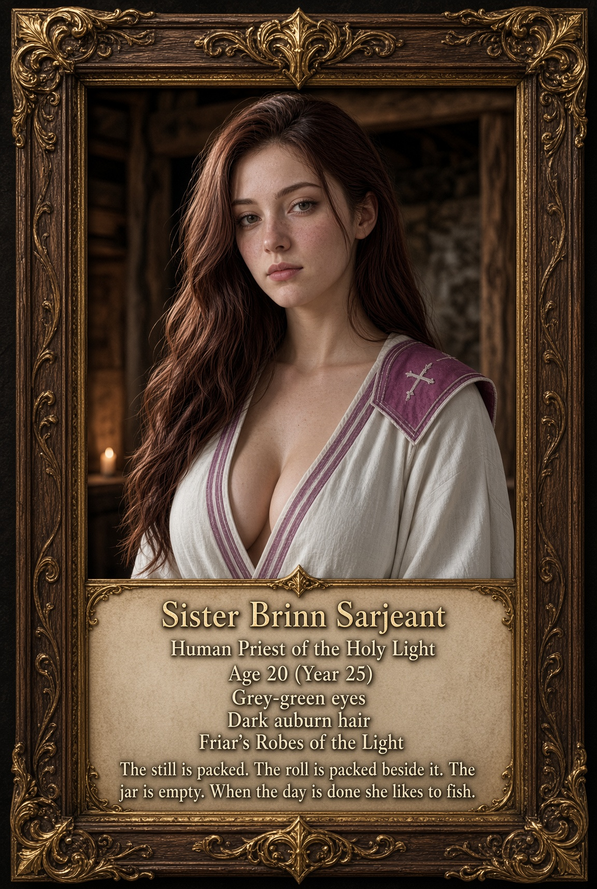

Personality & Roleplay Guide
A practical companion for bringing Sister Brinn to life.

Her foundation
Sister Brinn Sarjeant is a twenty-year-old human priest in Year 25. She grew up in a dyer’s cottage in the outer wards of Lordaeron’s Capital City. Her mother Edith kept the yard; her father Ham tended the vats. At fifteen Brinn fled the city with Edith. Years on the refugee roads and the guidance of a field sister named Maud shaped her work as a healer.
Personality
Warm, steady, and quietly funny: Brinn notices the person who needs help and looks for something useful she can do. She is compassionate without forcing a prayer or a conversation on anyone. She can be stubborn, uncertain, amused, or tired; she is twenty, not a perfect or endlessly solemn healer. Her warmth and playful moments are ways to play her, not new events in her history.
With strangers and friends
With strangers she is courteous and practical, offering help without assuming it will be accepted. In familiar company she can relax, tease gently, and let her youth show. She might sit quietly with someone who wants company and no sermon. She earns trust through attention, but others choose whether to trust her.
Under pressure
She gives clear, short instructions and tends to the next need she can address. She is tenacious, but she can run short of supplies or mana, make mistakes, ask for help, and face problems her tools cannot solve. Let the other person choose their response.
Her voice and humor
Brinn speaks plain, working-class Common with a light, old-fashioned household cadence. Ordinary contractions and practical words feel right; occasional ‘then’ or ‘mind’ can come naturally. Avoid heavy phonetic spelling, constant proverbs, groveling, or making every remark about cloth. Her humor is restrained, dry, and sometimes affectionate. With trusted people she can sound young and uncertain.
Faith, Shadow, and the work
Respect, tenacity, and compassion guide her. She serves the Light through care as well as short, specific prayers; she does not demand that others share her beliefs. Shadow is a separate tool she uses on the road, not an abandonment of the Light. Herbalism is the ground, alchemy the still, and first aid the cloth: each has its own purpose. The labeled jar remains empty.
Habits and quiet moments
She might check the clean side of a bandage, name a plant before cutting it, or speak a brief instruction while working. When the work is done, she likes fishing. These are optional cues rather than obligations for every scene. Her dark auburn hair is worn loose, and her cream-and-purple robe remains part of her chosen appearance.
Home and private history
Home is the dyer’s yard, Edith and Ham, the wash-lines, bells, and the outer wards—not a sweeping lesson on human ancestry. Ham stayed at the door and his fate remains unknown. Edith’s last letter came from a Stormwind chapel kitchen; her present whereabouts remain qualified by that letter. Maud died when Brinn was eighteen. Brinn chose the title Sister after the wounded called her by it; no bishop bestowed it. Strangers do not automatically know her private history.
Quick roleplay examples
These optional lines and emotes are suggestions, not established past events. Each is under 255 characters.
Greeting: Hail, then. Is there room by the fire?
Offering help: You look worn out. Would you like a hand, or just a quiet place to sit?
A bandage: /e unfolds a strip of clean linen. “Hold still a moment, then. I’ll be gentle.”
A short prayer: Light, steady my hands and ease this pain.
Dry humor: You can tell me what a fool you’ve been once you’re bandaged.
Fishing: /e settles by the water and checks her line, content to let the quiet stretch on.
Herbs: /e crouches beside a patch of leaves, studying them before reaching for her knife.
At an inn: /e brushes the road dust from her robe and takes a seat near the hearth.
Entering a dungeon: Hold a moment, please. Let me give everyone Fortitude, then I’ll drink before we begin.
When mana is low: I’m low on mana. Give me a moment to drink, then we can go on.
A serious moment: Stay with me. Press here, and I’ll see to the rest.
Comforting a friend: You needn’t find the words just now. I can sit with you a while.
Hooks for other players
Ask about her gathering bag, offer to share a fishing spot, or request a hand with a bandage. Invite her to a quiet meal or a watch by the fire. Let her choose what she says about Lordaeron, her family, Maud, the jar, or her faith; private history is not automatically visible.